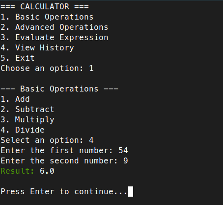
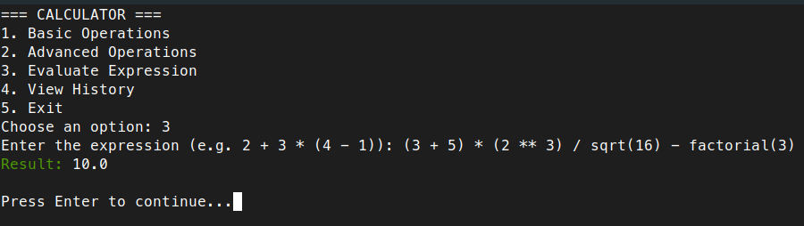

Calculator (Python CLI Project)
Created and maintained by Fbarquez
An educational project built in Python that demonstrates how to create a real console-based calculator using clear, structured, and testable code.
Terminal Output Preview


Supported Operations
| Operation | Function Name | Example Input |
|---|---|---|
| Addition | add(a, b) |
2 + 3 |
| Subtraction | subtract(a, b) |
7 - 2 |
| Multiplication | multiply(a, b) |
4 * 5 |
| Division | divide(a, b) |
9 / 3 |
| Square Root | square_root(a) |
sqrt(16) |
| Modulo | modulo(a, b) |
10 % 3 |
| Power | power(a, b) |
2 ** 4 |
| Percentage | percentage(a, b) |
30% of 200 |
| Factorial | factorial(a) |
factorial(5) |
| Full Expressions | evaluate(expr) |
2 + 3*(5 - 1) |
What is a Python CLI Project?
A Python CLI project is a program that runs in the terminal (also called the console or command line). It does not have buttons or graphical elements—users interact with it by typing commands and reading text responses.
Example:
git,pip install, or typingpython3 script.pyin the terminal.
This calculator works entirely this way.
What can this calculator do?
This project simulates a real calculator but in a text-only format. It allows you to:
- Perform basic operations: addition, subtraction, multiplication, division
- Use advanced functions: square roots, percentages, powers, modulo, factorial
- Evaluate full expressions like
2 + 3 * (5 - 1) - Save a history of operations to a file for future review
- Run tests to automatically check that everything works correctly
Project Structure
Just like in real-world programming, this project is split into multiple Python files to keep everything clean and organized:
calculator/
├── main.py ← Main program: shows the menu and handles user input
├── operations.py ← Math functions: add, divide, etc.
├── utils.py ← Utility helpers: show menu, clear screen, validate input
├── test_operations.py ← Automated tests to verify that functions work
├── history.json ← File to store calculation history
└── README.md ← This document
Tools and Libraries Used
Built-in Python Libraries
math
Allows mathematical operations like square root (sqrt) and factorial.
json
Used to store and read data in a human-readable file (history.json).
External Library
colorama
Adds colors to text in the terminal (e.g., green for results, red for errors).
Install it with:
pip install colorama
File-by-File Explanation
1. main.py — The Main Program
This is where the program starts. It shows the user a menu, asks what they want to do, and calls the right function.
Key imports:
from utils import show_menu, get_number, save_history, load_history, clear_screen
from operations import *
from colorama import Fore, Style, init
import math
utilsprovides input/output helpersoperationscontains all math functionscoloramais used for colorful terminal messagesmathallows secure math operations likesqrtin expressions
Core Logic:
- Uses a
while True:infinite loop to keep the calculator running - Displays a menu:
1. Basic Operations 2. Advanced Operations 3. Evaluate Expression 4. View History 5. Exit - Based on the choice, it calls the appropriate function
- After each operation, the user presses Enter to return to the menu
2. operations.py — Math Functions
Contains one function for each type of math calculation:
def add(a, b): return a + b
def divide(a, b): return "Error: Division by zero" if b == 0 else a / b
- Functions return results or handle errors (e.g., dividing by 0)
- Includes:
power(a, b)→ a raised to bsquare_root(a)modulo(a, b)→ remainder of a ÷ bpercentage(total, percent)factorial(a)
3. utils.py — Helper Functions
These don't calculate math but improve usability:
def show_menu()
def get_number(prompt)
def save_history(entry)
def load_history()
def clear_screen()
show_menu()→ prints the list of optionsget_number("...")→ asks for a number and checks it's validsave_history()&load_history()→ handle thehistory.jsonfileclear_screen()→ clears the terminal for cleaner user interface
4. test_operations.py — Automatic Testing
This file uses Python’s unittest module to test whether math functions return correct results:
import unittest
from operations import *
class TestCalculator(unittest.TestCase):
def test_add(self): ...
def test_divide_zero(self): ...
Run the tests like this:
python3 test_operations.py
If everything works, you’ll see confirmation. If not, it will tell you which test failed.
How Does It All Work Together?
Start the program:
python3 main.pyThe menu appears:
=== CALCULATOR === 1. Basic Operations 2. Advanced Operations 3. Evaluate Expression 4. View History 5. ExitYou choose an option (e.g.,
2for advanced operations)The program walks you through: it asks for numbers, calculates, shows the result, and logs it
Option
5exits the program cleanly
Run Tests
To check that the functions behave correctly, run:
python3 test_operations.py
Example result:
.....
----------------------------------------------------------------------
Ran 5 tests in 0.001s
OK
Feature Roadmap
- Add a graphical interface using
tkinterorPyQt - Save history with timestamps (
datetime) - Turn it into a web app using
Flask - Include scientific functions like sine, cosine, logarithm, etc.
- Add language translation support (i18n)
- Persist history using a database like SQLite
- Package it as a CLI tool using
argparseandsetuptools
Educational Value
This project is ideal for learning:
- How to organize code across multiple files
- Basic to intermediate math in Python
- Handling user input and errors
- Reading/writing files (
json) - Using external libraries (
colorama) - Writing unit tests (
unittest) - Building your first modular CLI application
Requirements
- Python 3.7+
coloramalibrary installed
License
This project is licensed under the MIT License © 2025 Fbarquez.
You are free to use, modify, and distribute this code, but attribution is required.
Any copy or derivative work must keep the original author's credit visible.
Want to contribute or report issues? Contact Fbarquez or open a Github issue